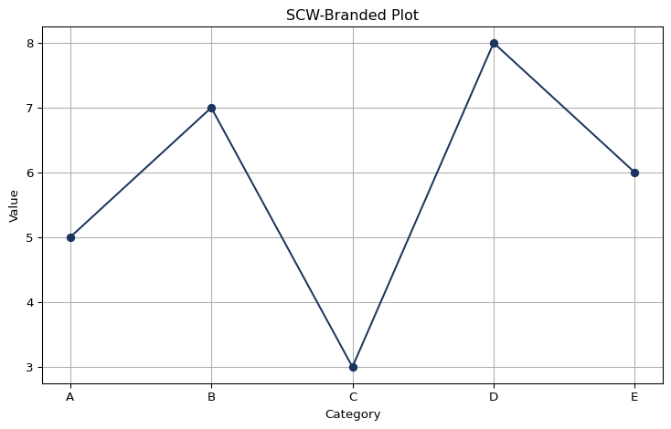
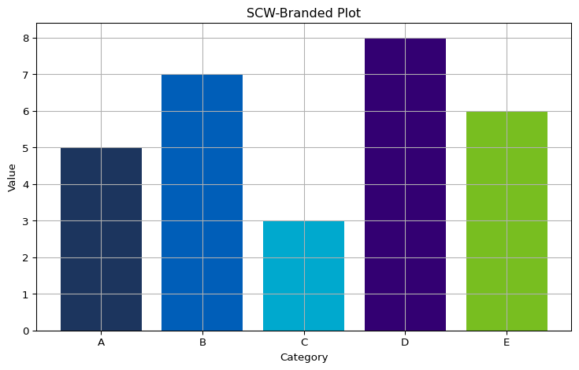

This session is the last in our series on fundamental programming concepts. It is an introduction to the programming paradigm that underpins Python, making it flexible and comparatively accessible to people starting out with coding.
While the concepts discussed can feel a little abstract at times, they will make ever more sense the more practical experience you have with Python. This will help you understand how the packages you use function and will hopefully lead you one day to create some sophisticated programs yourself!
If you want to download the Jupyter notebook so that you can run the code yourself, modify it, and generally have a play, you can download it by clicking on the “Jupyter” link under “Other Formats” over on the right-hand side below the page contents.
Session Slides
Use the left ⬅️ and right ➡️ arrow keys to navigate through the slides below. To view in a separate tab/window, follow this link.
A closer look at some of the basics
Here is a simple demonstration of how everything, down to individual integers, is treated as an object. When we run the dir() function on an integer and print the results, we can see all of the object attributes and methods associated with it.
To see which are attributes and which are methods, you can run the following code. We won’t run it here, because it produces quite a long list!
for name indir(my_int): item =getattr(my_int, name)ifcallable(item): # if an item is callable, i.e. you can "do" something with it, it is a methodprint(f"{name} -> method")else:print(f"{name} -> attribute") # otherwise, it is an attribute
Methods and attributes that are surrounded by double underscores are ones that are used “behind the scenes” to help objects behave in a certain way (this exhibits the principle of Abstraction mentioned in the presentation). The ones without are the ones that you would call directly when working with the objects.
Using methods
By now, you are likely to have come across operations that can be used to transform your data by tacking them onto the end of your variable name. These are methods belonging to that variable’s object.
# Here we are calling the "append" method of the list class.icb_list = ['QRL','QNQ','QU9','QSL'] # a list objecticb_list.append('QNX') # calling the method and passing a parameterprint(icb_list)
['QRL', 'QNQ', 'QU9', 'QSL', 'QNX']
If we apply the function dir() to our variable icb_list, we can see that “append” is one of the methods belonging to the list class.
Functions precede the variable function(my_variable), whereas methods are the ones that come after the variable my_variable.method().
Functions are not tied to a particular object class (for example, print() can be applied to most things), while methods are bound up with particular object classes (for example, the method pop is associated with lists, but not with integers).
The brackets that come after methods will often contain parameters that determine how the method is applied to the variable. This can be as simple as saying what we want to append to a list, as in the above example, or they can be as complex as the hyperparameters used to fine-tune a machine learning model.
Accessing attributes
To access an attribute, you simply write my_variable.attribute. Below is an example of accessing the “numerator” and “denominator” attributes of an integer. In Python, integers have these to enable consistency when working with rational numbers, i.e. fractions.
print(my_int.numerator)print(my_int.denominator)
5
1
\(\frac{5}{1} = 5\)
When you start working with machine learning models in Python, you will often want to access attributes such as coef_ (regression) and feature_importances_ (decision tree algorithms).
Now let’s move onto how we create our own classes.
The Anatomy of a Class
Let us first of all look at a simple class to see how it is structured as a whole. Then we will look at each element in turn.
class HealthProfessional: daily_capacity =7.5def__init__(self, assignment_number, division, department):self.assignment_number = assignment_number self.division = division self.department = department def treat_patient(self,patient_name):print(f'Health professional {self.assignment_number} treated patient {patient_name}')
Definition
The line begins the definition of the class. It starts with the class keyword, followed by the class name and a colon. By convention, classes in Python begin with a capital letter.
class HealthProfessional:
Class attribute
The next element is a class attribute, that is to say an attribute where the value will initially be the same for all objects created from that class. All of my health professionals have a default daily_capacity of 7.5 working hours per day. Class attributes sit just below the class name with one indent. Class attributes are optional.
class HealthProfessional: daily_capacity =7.5
Constructor method
Next comes the constructor method, which goes by the name of __init__. The double underscores (a so-called “dunder” method) indicate that it is a method that remains internal to the object i.e. it is not something that is accessed by the end user.
The constructor method defines what happens when an object instance is created (instantiated). It determines which attributes require values to be passed to the object at instantiation and can also trigger some methods to be execute automatically.
It is written much in the same way as defining a function, starting with the keyword def. The first argument of the function is alwaysself and is followed by arguments representing each of the object attributes.
Below that, each object attribute is bound to self with the self.attribute syntax and the = attribute syntax means that the corresponding value that gets passed to the object at instantiation will be assigned to that attribute.
self stores the instance of each object within the computer’s memory.
whenever we define a class method, we include self because we want to run this method in relation to this instance when we call it.
whenever we define an object attribute, we include self because we want to be able access the attribute value that belongs to this instance.
Class method
Now, returning to the definition of a class, we come to the class method.
It is again defined just like a normal function, and this time we can give it whatever name we like. The first argument is alwaysself, which is followed by any other arguments relevant to the method. In our example, we want to pass a patient_name to the HealthProfessional object so that it knows which patient it is being asked to treat.
def treat_patient(self,patient_name):print(f'Health professional {self.assignment_number} treated patient {patient_name}')
Our class in action
Now we can have a look at our HealthProfessional class in action.
First of all, we need to instantiate a HealthProfessional object. We need to assign it to a variable name so that we can easily refer to the object later on.
doctor_duggee = HealthProfessional( assignment_number =12345, # writing out the argument names is optional division ="A", department="Surgery")
We can use the .treat_patient method:
doctor_duggee.treat_patient("Betty")
Health professional 12345 treated patient Betty
We can access the object’s object attributes:
print(f'Health Professional {doctor_duggee.assignment_number} works in the {doctor_duggee.department} department')
Health Professional 12345 works in the Surgery department
And we can access the class attribute:
doctor_duggee.daily_capacity
7.5
It is also very easy to update an object’s attribute values. Compare this with updating the values in a dict, which can be quite fiddly.
doctor_duggee.department ='Medicine for Older Persons'doctor_duggee.division ='C'print(f'Health Professional {doctor_duggee.assignment_number} works in the {doctor_duggee.department} department in Division {doctor_duggee.division}')
Health Professional 12345 works in the Medicine for Older Persons department in Division C
Class attribute values can be updated at object level in the same way. This change won’t affect new objects created from the class. Think of class attributes as holding a common default value.
One of the main strengths of object-oriented programming is the ability to create child classes from other classes (the original, parent classes). This allows us to create classes that modify or extend the data (attributes) and behaviours (methods) of the parent class, without altering the parent class itself. Multiple child classes can be created which share the attributes and methods consistently, but extend or modify them in their own way.
Let us have a look at how a child class gets created from the parent class. Again, we will start off with the child class written out in full so that you can see how it would look. Then we will go through it line by line.
We are going to create “Doctor” and “Nurse” child classes of the HealthProfessional parent class. They will inherit the attributes and methods of the HealthProfessional class, but extend them in their own way.
class Doctor(HealthProfessional):def__init__(self,assignment_number,division,department,seniority):self.seniority = senioritysuper().__init__(assignment_number,division,department)def discharge_patient(self,patient_name):print(f'Doctor {self.assignment_number} discharged patient {patient_name}')
Child class definition
First of all, when defining a child class, we start off with the keyword class followed by the name of the child class, followed by the name of the parent class in brackets, ending with a colon.
class Doctor(HealthProfessional):
Child class constructor method and child attributes
Then, with one indentation, we write the constructor method, just as we did with the parent class. Remember, we must always enter self as the first argument. Then we need to enter the names of the attributes that the child class will inherit from the parent, followed by any new object attributes. In the second line, the any new object attributes are bound to self.
Below any new attributes, we enter a line that draws down any methods and attributes from the parent class. super() is a function that calls the constructor function from the parent class.
Note that you do not need to refer to any methods or class attributes here. They automatically get replicated by the super() method. The only elements that you need to explicitly mention are the object attributes defined in the parent class.
TipRemember
Class attributes are the ones that have “default” values that are common to all objects created from a class. In our HealthProfessional example, this was daily_capacity. They are written just under the class name and are not bound to self. Object attributes receive their values when an object is instantiated and are specific to that object. They are bound to self.
Child-specific methods
Last in our example is the definition of any new methods that are specific to the child class. Doctor objects will be able to treat patients with the inherited .treat_patient() method, but we are also going to give them the ability to discharge patients with the .discharge_patient() method.
As with the .treat_patient() method in the parent class, we use the def keyword, followed by the name of the method for the child class, self as the first argument, and the name of any variable that we want to pass to the method, in this case the name of the patient we want to discharge.
Assignment number: 999999
Division: B
Department: Ophthalmology
Seniority: Consultant
Note that we can still retrieve the daily_capacity attribute, which was defined in the parent class HealthProfessional
doctor_peppa.daily_capacity
7.5
However, we can prove that Doctor Peppa is a Doctor object and not a HealthProfessional object by using Python’s type() function
type(doctor_peppa)
__main__.Doctor
We can also test Doctor Peppa’s methods:
doctor_peppa.treat_patient("Suzy Sheep")
Health professional 999999 treated patient Suzy Sheep
TipInteresting…
Did you notice how it said “Health professional”? This was actually unintentional, but it neatly demonstrates how the .treat_patient() method has been inherited from the parent class (because the text of the statement wasn’t amended when the child class was created).
doctor_peppa.discharge_patient("Suzy Sheep")
Doctor 999999 discharged patient Suzy Sheep
What happens if Doctor Duggee tries to discharge a patient? Try uncommenting the Python below and running the cell.
# doctor_duggee.discharge_patient("Happy")
We get an error, because doctor_duggee is a HealthProfessional object, which does not contain the .discharge_patient() method.
If you want to turn doctor_duggee into a Doctor object, you need to instantiate him as such.
Let’s quickly define the Nurse child class of HealthProfessional to demonstrate how different child classes can share the same inherited characteristics, but still have their own.
Instead of seniority, Nurse objects will have band and role attributes, and instead of .discharge_patient() the method .take_readings().
class Nurse(HealthProfessional):def__init__(self,assignment_number,division,department,band,role):self.band = bandself.role = rolesuper().__init__(assignment_number,division,department)# Adding a new method to the child classdef take_readings(self,patient_name):print(f'Nurse {self.assignment_number} took the vital signs readings of {patient_name}')
nurse_tag = Nurse( assignment_number =10101, division ="A", department ="Cancer Care", band ="5", role ="Staff Nurse")print(f'Assignment number: {nurse_tag.assignment_number}')print(f'Division: {nurse_tag.division}')print(f'Department: {nurse_tag.department}')print(f'AfC Band: {nurse_tag.band}')print(f'Role: {nurse_tag.role}')print(f'Daily Capacity: {nurse_tag.daily_capacity}')nurse_tag.take_readings("Roly")
Assignment number: 10101
Division: A
Department: Cancer Care
AfC Band: 5
Role: Staff Nurse
Daily Capacity: 7.5
Nurse 10101 took the vital signs readings of Roly
The isinstance() function
There is also a function that can check whether an object belongs to a specified class. (This is particularly useful for checking data types when a specific type needs to be enforced, given that every variable is treated as an object belonging to a particular class. This data type enforcement doesn’t happen by default in Python since it is a dynamically-typed language. Leaving this up to Python could lead to a mismatch of data types, which could lead to errors further down the line).
isinstance(nurse_tag,Nurse)
True
# Imagine we wanted to ensure that AfC bands always get stored as strings# for consistency since they can include alphanumeric values (e.g. "8a") as# well as purely numeric values (e.g. "6")my_input =7# this will be interpreted as an integerifisinstance(my_input,str):print('Valid input')else:print('Invalid input: this field only accepts text strings')
Invalid input: this field only accepts text strings
Those are the fundamentals of how to create classes and objects. Let’s have a look at something a bit more advanced to give you an idea of something you might want to create for a team of analysts.
A practical example
Below is an example of how we might create an standard SCW chart template for different kinds of charts using a class. The string and Boolean values in the constructor method are default values that can be overwritten by any values passed to the object at instantiation.
import matplotlib.pyplot as pltclass SCWPlot:def__init__(self, x_data, y_data, title="SCW Plot", xlabel="X-axis", ylabel="Y-axis", grid=False):self.x_data = x_dataself.y_data = y_dataself.title = titleself.xlabel = xlabelself.ylabel = ylabelself.grid = grid# Colour palette based on SCW coloursself.palette = ['#1C355E','#005EB8','#00A9CE','#330072','#78BE20']# This part is a method internal to the class. It is not accessed by users, but helps to standardise# the methods relating to each type of chart. By convention, these internal methods begin with an underscore.def _setup_plot(self): plt.figure(figsize=(8, 5)) plt.title(self.title) plt.xlabel(self.xlabel) plt.ylabel(self.ylabel) plt.grid(visible=True,which='major',axis='both') plt.tight_layout()# The two methods below are each for a different kind of chart that the user can plot. They both make use of# the ._setup_plot() to determine certain shared, consistent characteristics.def plot_line(self, linestyle='-', marker='o'):self._setup_plot() # use the common structure defined above plt.plot( # plot a line chart with the data passed to the objectself.x_data, self.y_data, color=self.palette[0], # use the first value in the palette list linestyle=linestyle, marker=marker ) plt.show() # display the chartdef plot_bar(self):self._setup_plot() # use the common structure defined above plt.bar( # plot a bar chart with data passed to the objectself.x_data, self.y_data, color=self.palette ) plt.show() # display the chart
Then we will create a very simple dataset to use for testing the use of our class.
x = ['A', 'B', 'C', 'D', 'E']y = [5, 7, 3, 8, 6]
Now we can instantiate an SCWPlot object and call the two chart type methods to produce charts.
plot = SCWPlot(x, y, title="SCW-Branded Plot", xlabel="Category", ylabel="Value")plot.plot_line()

plot.plot_bar()

As you can see, it becomes easy for the user to switch between different kinds of plots while maintaining a standard colour scheme and chart size.
In reality, you would not have all of the implementation code (i.e. the code written to create the class) in your script or notebook. This would stored in a separate Python file and the class would be imported into the script. In a future session we will talk about this and creating our own packages.
Simple maintenance and extensibility
Creating standardised functions as methods of a class helps to simplify maintaining and extending functionality. In the example above, things like the colour palette and figure size are defined once and these get cascaded to the methods relating to individual chart types, so they only need to be edited once. Furthermore, it is easy for a colleague to add another chart type (e.g. horizontal bar) with four lines of code, without necessarily having to understand in detail how the rest of the class has been constructed. This example produces relatively simple charts, but there is the potential to create a class that consistently produces timeseries charts with a preferred x-axis layout (something that can be quite fiddly to perfect!).
While this class can be extended by adding more chart type methods, can you think of a possible reason for creating a child class from it?
Exercises
How do you check what class a variable is?
NoteSolution
my_variable =5type(my_variable)
int
How would you check whether the value of the variable in the previous solution is an integer?
NoteSolution
isinstance(my_variable,int)
True
Which function can be used to display all of the methods and attributes belonging to an object?
How do you access an object’s attributes? What is the syntax?
NoteSolution
object.attribute
my_variable.numerator
5
How do you call an object’s methods? What is the syntax?
NoteSolution
object.method()
my_variable.is_integer()
True
Create a class called “Patient” with the characteristics below. You may wish to refer back to previous sessions on core programming concepts for guidance.
A class attribute called “bed_space” and assign it the value 1
Object attributes for “patient_number” and “diagnosis”, values for which will be assigned at instantiation, and “cured” which has the default value of False as well as “admitted” with the default value of True
A method called “get_well” which updates the “cured” attribute to True and prints a statement that returns the “patient_number” and the “diagnosis” that the patient has been cured of. (Hint: you will need to use an f-string with the attributes embedded in the statement).
A method called “get_discharged” which checks whether the patient has been cured and if this is True, prints a statement to say that the patient has been discharged and sets “admitted” to False. Othwerwise, it prints a statement to say that the patient is not ready to be discharged.
NoteSolution
class Patient: bed_space =1def__init__(self,patient_number,diagnosis):self.patient_number = patient_numberself.diagnosis = diagnosisself.cured =Falseself.admitted =Truedef get_well(self):self.cured =Trueprint(f'Patient {self.patient_number} has been cured of {self.diagnosis}')def get_discharged(self):ifself.cured ==True:print(f'Patient {self.patient_number} has been discharged')self.admitted =Falseelse:print(f'Patient {self.patient_number} is not ready to be discharged')
Instantiate a Patient object with a “patient_number” and “diagnosis”. Try discharging the patient before they have been cured, then call the get_well method and try discharging the patient again.
Patient 12345 is not ready to be discharged
Patient 12345 has been cured of acute tummy ache
Patient 12345 has been discharged
With the Patient object you created, how would you access the “admitted” attribute to check whether they are still an inpatient?
NoteSolution
my_patient.admitted
False
Create a child class called “SurgeryPatient” that inherits the methods and attributes from Patient. Add an attribute called “theatre” to store the name of the operating theatre that gets assigned when the object is created and a method that checks whether the patient has been cured or not. When False, the method prints a message requesting that the patient be transferred to the theatre, when True the method prints a message to say that the patient can proceed to discharge.
NoteSolution
class SurgeryPatient(Patient):def__init__(self, patient_number, diagnosis, theatre):self.theatre = theatresuper().__init__(patient_number, diagnosis)def theatre_call(self):ifself.cured ==False:print(f'Please transfer patient {self.patient_number} to theatre {self.theatre}')else:print(f'Patient {self.patient_number} is now ready for discharge')
Instantiate a SurgeryPatient object, test whether the attributes and methods have been inherited from the Patient class, and test the .theatre_call() method. Your solution doesn’t have to match exactly. Just be sure that you are able to test each element of the class.
NoteSolution
my_surgery_patient = SurgeryPatient(patient_number=54321,diagnosis='a broken leg',theatre='11F')print(f'This patient occupies {my_surgery_patient.bed_space} bed')my_surgery_patient.get_discharged()my_surgery_patient.theatre_call()my_surgery_patient.get_well()my_surgery_patient.theatre_call()my_surgery_patient.get_discharged()print(f'Is this patient still on our inpatient ward? {my_surgery_patient.admitted}')
This patient occupies 1 bed
Patient 54321 is not ready to be discharged
Please transfer patient 54321 to theatre 11F
Patient 54321 has been cured of a broken leg
Patient 54321 is now ready for discharge
Patient 54321 has been discharged
Is this patient still on our inpatient ward? False
Bonus challenge
We haven’t provided a suggested solution for this one, but do feel free to discuss potential answers in the Code Club channels.
Instantiate a smallish number of Patient objects (no need to spend too much time on this, but you do need more than one!). Can you work out a way to total the amount of bed space occupied by your patients by summing together the bed_space class attribute values? Try using a loop.